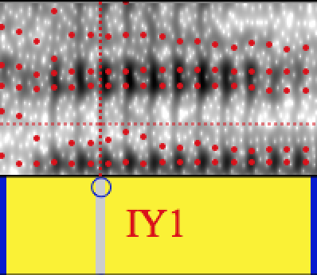
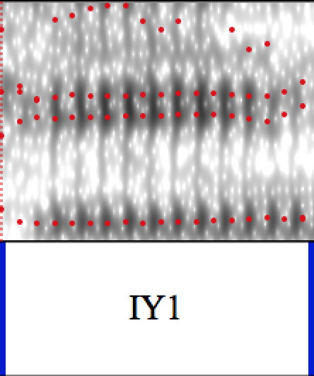

Forced Alignment and Vowel Extraction for Sociophonetics
Josef Fruehwald
March 13, 2014
People make mistakes.

“It’s like…”


The Result

P2FA

Specs
Accuracy, from Yuan & Liberman (2008)

Using Forced Alignment
Yuan, J., Liberman, M., “Automatic detection of ‘g-dropping’ in American English using forced alignment,” Proceedings of 2011 IEEE Automatic Speech Recognition and Understanding Workshop, pp. 490-493.

Formant Estimation
3

4

6
Formant Estimation

Automating Formant Estimation
- The bad errors are very very bad.
- Some small differences, any expert may disagree
4

5
FAVE-extract